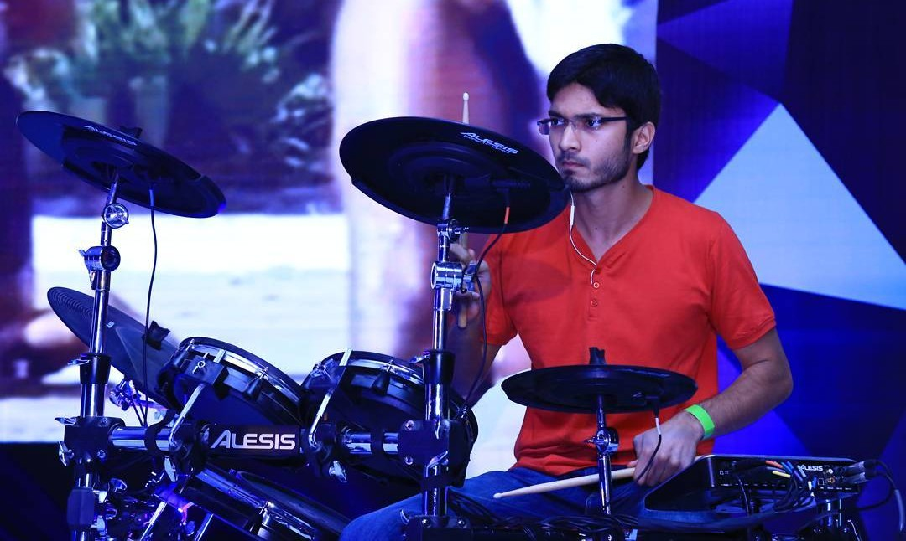
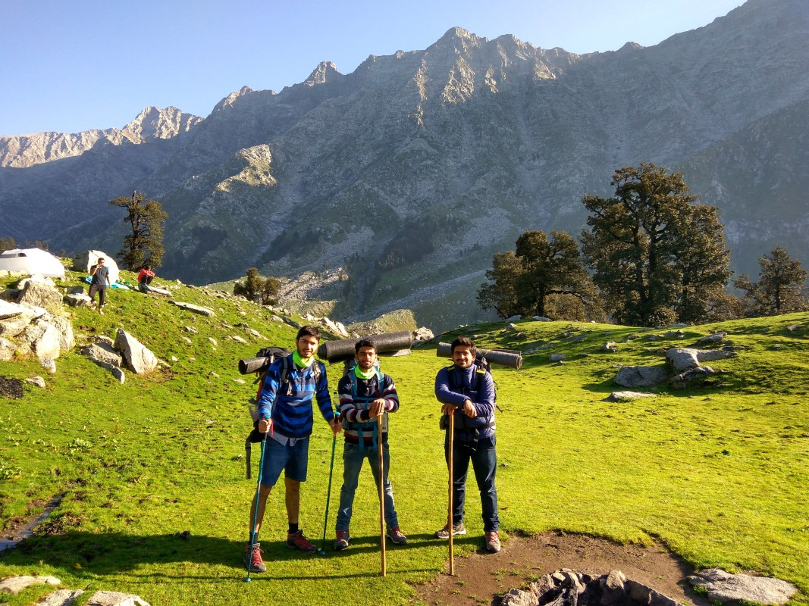
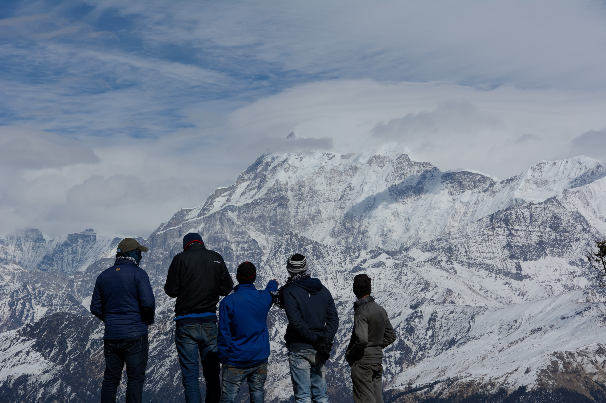
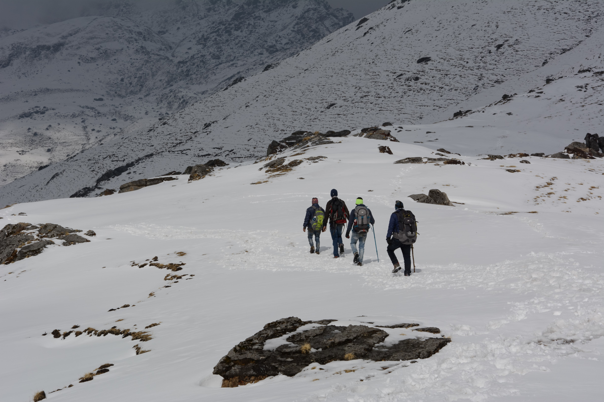

I love to play Rock, Metal, Progressive and Jazz Music on the drums and jam and improvise with my friends. I organized several rock shows back in the IIT where we also invited international headliners. Fun times! Now, over the summer I just play on Sundays at a local open jam session and play with the CMU jazz band during the semester.
Show at the Lalit Ashok Hotel, Bangalore
You can see me in action below, covering “The Dance of Eternity – Dream Theater”
Hiking
The highest I have been at 5.6kms
Moon light reflected from the clouds when we stayed at a cave overnight
After climbing the 4.4km mountain behind
View of the Trishul Mountain (7120m)
Our first snow trek in the Himalayas!
I fell in love with hiking after moving to Bangalore where with my friends I used to hike on the weekend. We covered around 10-15 hikes around the city. But after we got a taste of what it was to climb Himalayas, we never looked back.
The Himalayas according to me is the most magnificent place on the earth. There is something so awe inspiring and humbling about the place that we couldn’t help but keep coming back.
Leadership
I love to take a team forward to achieve big goals. For that reason I had leadership roles in many student organizations.